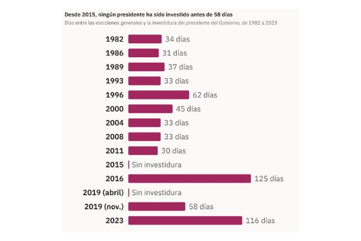

Actualidad · Voto por correo · España
Voto por correo para las elecciones generales del 29N: el plazo para pedirlo acaba el jueves 19; en 2023, una de cada tres solicitudes llegó en las dos últimas semanas
El voto se puede depositar hasta el 25 de noviembre. En 2023, en 51 de las 52 circunscripciones hubo más solicitudes que votos le faltaron a la lista más cercana al último escaño. En Girona, el último diputado se decidió por 285 votos; 16.323 electores habían pedido votar por correo.
Por Nacho G. del Álamo ·
Cada párrafo lleva una etiqueta: dato (cifra comprobable con las fuentes), patrón (relación que se repite, sin afirmar la causa), hipótesis (explicación posible, sin dos fuentes independientes) o contexto (hechos y declaraciones publicados por otros, enlazados). Cómo verificamos
ContextoEl voto por correo para las elecciones generales del 29N se puede pedir hasta el jueves 19 de noviembre, incluido, en cualquier oficina de Correos o en su web con certificado digital o DNI electrónico, según Correos. La documentación llega a casa desde el 9 de noviembre y el voto se puede depositar hasta el 25 de noviembre. Quien lo pide y se lo aceptan ya no puede votar en su mesa el 29 de noviembre, recuerda el Ministerio del Interior. Ni Correos ni el Censo Electoral han publicado todavía cuántas solicitudes llevan.
DatoEn las generales de julio de 2023 se aceptaron 2.604.386 solicitudes de electores residentes en España, según el INE, y buena parte llegó al final: 854.275, el 32,8 %, se recibieron en las dos últimas semanas del plazo, del 30 de junio al 13 de julio. Otras 122.790 constan como recibidas después.
Ver la tabla
| Fecha de recepción | Solicitudes aceptadas | % del total |
|---|---|---|
| Hasta el 1 de junio | 167.883 | 6,4 |
| Del 2 al 15 de junio | 886.354 | 34,0 |
| Del 16 al 29 de junio | 573.084 | 22,0 |
| Del 30 de junio al 13 de julio | 854.275 | 32,8 |
| Después del 13 de julio | 122.790 | 4,7 |
DatoHay escaños que se deciden por poco. En 2023, en 51 de las 52 circunscripciones hubo más solicitudes de voto por correo que votos le faltaron a la lista que se quedó más cerca del último escaño. En Girona, al PP le faltaron 285 votos para quitarle el último diputado a Junts, y 16.323 electores de la provincia habían pedido votar por correo. En Cantabria, al PP le faltaron 404 para quitárselo a Vox; las solicitudes fueron 23.096. La única excepción fue la ciudad autónoma de Melilla, donde la diferencia fue mayor que las solicitudes. En Teruel, a Teruel Existe le faltaron 1.946 votos para conservar el diputado que tenía desde 2019; hubo 7.635 solicitudes de voto por correo.
Ver la tabla
| Circunscripción | Escaños | Último escaño | Lista más cerca | Votos que le faltaron | Solicitudes de voto por correo |
|---|---|---|---|---|---|
| Girona | 6 | Junts | PP | 285 | 16.323 |
| Cantabria | 5 | Vox | PP | 404 | 23.096 |
| Tarragona | 6 | Junts | PSOE | 1.248 | 18.007 |
| Madrid | 37 | PP | PSOE | 1.340 | 625.725 |
| Albacete | 4 | PSOE | Vox | 1.412 | 21.872 |
| Salamanca | 4 | PP | PSOE | 1.495 | 24.296 |
| Santa Cruz de Tenerife | 7 | PSOE | Sumar | 1.565 | 39.950 |
| Ceuta | 1 | PP | PSOE | 1.587 | 5.623 |
| Teruel | 3 | PP | Teruel Existe | 1.946 | 7.635 |
| Málaga | 11 | PP | PSOE | 2.429 | 50.617 |
| Gipuzkoa | 6 | PNV | Sumar | 2.433 | 57.433 |
| Cuenca | 3 | PP | PSOE | 2.728 | 10.187 |
| Navarra | 5 | PSOE | Sumar | 2.855 | 47.206 |
| Guadalajara | 3 | Vox | PP | 3.058 | 15.896 |
| Las Palmas | 8 | PP | Nueva Canarias | 3.190 | 46.289 |
| Lleida | 4 | PSOE | PP | 3.509 | 13.542 |
| Castellón | 5 | Vox | Sumar | 4.727 | 17.347 |
| Soria | 2 | PSOE | Soria ¡Ya! | 5.270 | 6.467 |
| Huesca | 3 | PP | PSOE | 5.477 | 13.209 |
| Pontevedra | 7 | PSOE | BNG | 6.085 | 43.131 |
| Ourense | 4 | PP | PSOE | 6.087 | 20.924 |
| Ávila | 3 | PP | Vox | 6.117 | 8.792 |
| Lugo | 4 | PP | PSOE | 6.350 | 20.802 |
| Melilla | 1 | PP | PSOE | 6.504 | 5.421 |
| Álava | 4 | PNV | Sumar | 6.515 | 30.792 |
| Badajoz | 5 | Vox | PSOE | 7.004 | 37.365 |
| Palencia | 3 | PP | PSOE | 7.097 | 12.397 |
| Murcia | 10 | PSOE | PP | 7.379 | 51.738 |
| Segovia | 3 | PP | Vox | 7.438 | 9.122 |
| Sevilla | 12 | Sumar | Vox | 7.659 | 130.898 |
| Asturias | 7 | PP | PSOE | 7.768 | 55.679 |
| Burgos | 4 | PSOE | Vox | 9.030 | 29.164 |
| Zamora | 3 | PP | Vox | 9.447 | 10.528 |
| Granada | 7 | Sumar | PSOE | 9.840 | 49.190 |
| Cádiz | 9 | PP | PSOE | 10.504 | 34.619 |
| Huelva | 5 | Vox | Sumar | 10.821 | 22.726 |
| León | 4 | PSOE | Vox | 10.839 | 30.688 |
| A Coruña | 8 | BNG | PSOE | 12.063 | 58.302 |
| Cáceres | 4 | PP | Vox | 12.741 | 23.793 |
| La Rioja | 4 | PSOE | PP | 13.769 | 20.831 |
| Valladolid | 5 | Vox | PP | 14.675 | 45.535 |
| Córdoba | 6 | Sumar | PP | 14.807 | 44.493 |
| Alicante | 12 | PP | Sumar | 16.331 | 48.882 |
| Toledo | 6 | PP | Sumar | 17.075 | 33.712 |
| Illes Balears | 8 | PSOE | Sumar | 17.704 | 36.545 |
| Barcelona | 32 | PSOE | Vox | 17.998 | 225.692 |
| Almería | 6 | PP | Vox | 19.319 | 23.758 |
| Valencia | 16 | PP | PSOE | 22.117 | 113.501 |
| Ciudad Real | 5 | Vox | PP | 23.430 | 25.376 |
| Bizkaia | 8 | EH Bildu | PNV | 24.613 | 126.049 |
| Jaén | 5 | Vox | Sumar | 24.940 | 41.820 |
| Zaragoza | 7 | PP | PSOE | 26.919 | 71.401 |
ContextoLa cuenta no dice que el voto por correo cambiara ningún escaño, porque no se sabe a quién se votó por correo. Dice que en casi todas las circunscripciones el último diputado se decidió por menos votos de los que se pidieron por correo. Hay más datos sobre quién lo pide y dónde en esta pieza sobre el voto por correo desde 2004.
Preguntas frecuentes
¿Hasta cuándo se puede pedir el voto por correo para las elecciones generales del 29N?
Hasta el jueves 19 de noviembre de 2026, incluido, en una oficina de Correos o en su web. El voto se puede depositar en Correos hasta el 25 de noviembre, según Correos.
Si pido el voto por correo, ¿puedo votar en la mesa el 29N?
No. Si la solicitud se acepta, ya no se puede votar en persona, según el Ministerio del Interior.
¿Cuánta gente pidió el voto por correo en 2023?
Se aceptaron 2.604.386 solicitudes de electores residentes en España, según el INE. 854.275 se recibieron en las dos últimas semanas del plazo.
El voto por correo, provincia a provincia · Dónde y cómo votar el 29N
Método y fuentes
- Qué se compara
- Las solicitudes de voto por correo aceptadas en 2023, por fecha de recepción y por provincia, frente a los votos que le faltaron a la lista que se quedó más cerca del último escaño en cada circunscripción.
- Límites
- Son solicitudes, no votos, y de electores residentes en España. No se sabe a quién se votó por correo, así que la cuenta no dice que cambiara ningún escaño. Los votos que faltaban suponen que no se le quitan a nadie. La tabla del INE fecha las solicitudes por su recepción: 122.790 constan como recibidas después del cierre del plazo, el 13 de julio.
- Cómo se calcula
- Solicitudes: INE, tablas 59759 y 59763. Último escaño: D'Hondt con barrera del 3 % de los votos válidos, con los resultados definitivos con voto exterior y todas las candidaturas (actualidad/src/sistema/cifras.json); votos que faltaban: cociente del último escaño por los escaños de la otra lista más uno, menos sus votos, más uno, y el menor de todas las listas. Script: actualidad/src/resumenes/voto_correo_plazo.py. Cifras reproducibles con los scripts del expediente de la pieza. Metodología de Actualidad · Metodología del Atlas
- Fuentes
- Ministerio del Interior, resultados electorales por mesa y voto CERA (municipio 999), vía pollspaindata
- INE, Oficina del Censo Electoral, solicitudes de voto por correo aceptadas por provincia (2023)
- INE, Oficina del Censo Electoral, voto por correo por fechas de recepción (2023)
- Correos, el jueves 19 de noviembre finaliza el plazo para solicitar el voto por correo (16-11-2026)
- La Moncloa, cómo solicitar el voto por correo en las elecciones generales del 29N (20-10-2026)
- Autoría
- Nacho G. del Álamo
- Revisión de datos y texto
- Nacho G. del Álamo, 17 de noviembre de 2026
- Publicado · actualizado
- 17 de noviembre de 2026 · 17 de noviembre de 2026
- Correcciones
- Ninguna.
Serie «Camino al 29N»: 177 piezas
- Dos de los cuatro del debate de laSexta no se presentan el 29N: ni Cuerpo ni Bustinduy están en ninguna lista
- El CIS da al PSOE más escaños que la media de encuestas en 13 provincias y menos en ninguna; en Madrid, entre 12 y 14 frente a 10
- A dos semanas del 29N, 14 de las 16 encuestas con escaños dan mayoría absoluta a PP y Vox; solo el CIS y SW Demoscopia ponen por delante al PSOE
- De los 25 convocados de De la Fuente nacidos en España, 15 nacieron donde ganó el PSOE en 2023 y 8 donde ganó el PP; en Puente Genil, el PP ganó por 31 votos
- Vox, primero en el CIS entre los de 18 a 24 años: la generación de 2008 estrena voto en unas generales
- El PSOE sube en siete de las nueve encuestas de la primera semana de campaña; el PP baja en cuatro y sube en otras cuatro
- Feijóo hace campaña con UPN en Pamplona, donde el PSOE ganó 77 de las 151 secciones en 2023; con UPN y PP sumados, se habría quedado en 49
- Al PP le faltaron 9.793 votos en 2023 para recuperar un diputado en Gipuzkoa; Feijóo arropa hoy a su candidato, atacado en Hernani
- En 2023, las últimas encuestas daban al PP 5,7 puntos de ventaja sobre el PSOE y ganó por 1,4: si hoy fallaran igual, el PSOE iría primero
- Si la abstención fuera un partido, en 2023 habría quedado por delante del ganador en más de la mitad de las grandes ciudades y en la mitad de las secciones de España
- Estás aquíVoto por correo para las elecciones generales del 29N: el plazo para pedirlo acaba el jueves 19; en 2023, una de cada tres solicitudes llegó en las dos últimas semanas
- Encuestas y debate: tras el cara a cara de 2023, 10 de 14 encuestadoras ampliaron la ventaja del PP; trece días después ganó por 1,4 puntos
- Elecciones generales: una de cada tres secciones cambió de ganador entre 2019 y 2023
- Elecciones generales: las encuestas dan al PSOE entre el 25,5 y el 33,3 %
- Elecciones generales: Vox baja al 17 % en la encuesta diaria de El País
- Encuestas elecciones generales 2026, hoy 18 de noviembre: el PSOE, a dos puntos o menos del PP
- Encuestas elecciones generales 2026, hoy 19 de noviembre: Sondaxe deja al PSOE a 0,7 puntos del PP
- Debate Sánchez Feijóo: hora, dónde verlo y quién gana el cara a cara
- Elecciones generales: el modelo de encuestas da escaño al Frente Amplio en 5 de sus 17 provincias
- Elecciones generales: en Gijón, Vox sacó en 2023 su mejor resultado en Somió, el barrio más rico: 17,0 %
- Ver las 177 piezas de la serie
Más datos: elecciones generales del 29N de 2026: fecha y escaños por provincia · resultados de las elecciones generales 2026 (29N) y los de 2023 · dónde y cómo votar el 29N: colegio electoral, voto por correo y plazos.
Sigue leyendo
 Encuestas de hoyEncuestas elecciones generales 2026, hoy 23 de noviembre: PP y Vox suman mayoría absoluta en las siete
Encuestas de hoyEncuestas elecciones generales 2026, hoy 23 de noviembre: PP y Vox suman mayoría absoluta en las siete Camino al 29NVoto en blanco y voto nulo en las elecciones generales del 29N: qué cuenta y a quién afecta
Camino al 29NVoto en blanco y voto nulo en las elecciones generales del 29N: qué cuenta y a quién afecta Camino al 29NEscrutinio de las elecciones generales del 29N: cómo seguirlo en directo y cuándo es definitivo
Camino al 29NEscrutinio de las elecciones generales del 29N: cómo seguirlo en directo y cuándo es definitivo
Camino al 29NDespués de las elecciones generales del 29N: cuándo se constituyen las Cortes y los plazos de la investidura ParticipaciónParticipación en las elecciones generales del 29N: las encuestas prevén un 73,1 %, 2,7 puntos más que en 2023
ParticipaciónParticipación en las elecciones generales del 29N: las encuestas prevén un 73,1 %, 2,7 puntos más que en 2023 Crónica de la semanaA una semana del 29N, la mediana de las encuestas da al PP 3,4 puntos de ventaja, 1,2 menos que hace siete días; el lunes 23 es el último día para publicarlas
Crónica de la semanaA una semana del 29N, la mediana de las encuestas da al PP 3,4 puntos de ventaja, 1,2 menos que hace siete días; el lunes 23 es el último día para publicarlas